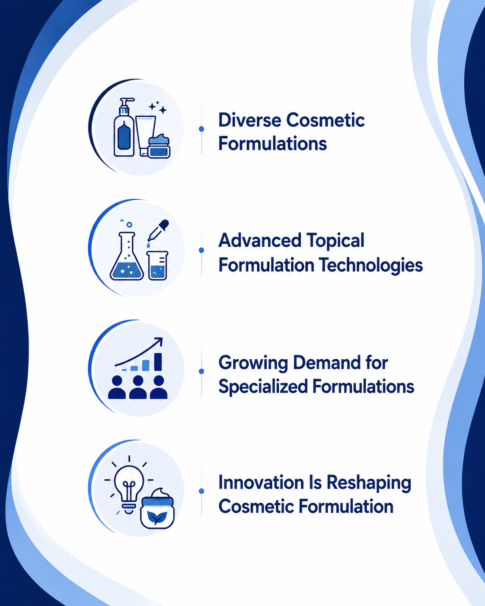

Beyond Formulation: How the Cosmetics Industry Is Evolving
8 August 2026
The cosmetics and personal care industry continues to evolve as consumer preferences, ingredient innovation, topical formulation technologies, regulatory expectations, and demand for more sophisticated topical products reshape the way companies develop and bring products to market.
From facial serums and moisturizers to sunscreens, shampoos, conditioners, makeup, and body-care products, modern cosmetic formulations increasingly combine functional ingredients, sophisticated delivery systems, sensory technologies, and carefully designed product formats.
In this environment, cosmetic formulators, ingredient suppliers, contract manufacturers, testing laboratories, packaging companies, and specialized development partners have become important contributors across the product development and commercialization process.
As product portfolios become more diverse and consumers increasingly seek targeted benefits, cosmetic companies are placing greater emphasis on formulation expertise, ingredient compatibility, product safety, stability, sensory performance, manufacturing capabilities, regulatory compliance, and speed to market.

The Changing Nature of Cosmetic Product Development
Cosmetic product development is no longer focused solely on creating a topical formulation with an attractive appearance, fragrance, texture, or sensory profile. Today, successful product development requires balancing multiple technical considerations, including ingredient functionality, formulation stability, microbiological quality, packaging compatibility, consumer experience, manufacturing feasibility, and applicable regulatory requirements.
For example, developing a facial serum may require consideration of the solubility and stability of active ingredients, pH compatibility, oxidation sensitivity, preservative strategy, and interaction with the selected packaging.
Similarly, an emulsion-based moisturizer requires careful control of the oil and aqueous phases, emulsifier system, rheology, sensory properties, and long-term physical and microbiological stability. This complexity has increased the importance of specialized formulation partners and cosmetic manufacturers with expertise across different product categories and technologies.
Understanding the Diversity of Cosmetic Formulations
One of the defining characteristics of the cosmetics industry is the diversity of topical formulation types and delivery formats. Cosmetic products can include:
- Emulsions such as creams, lotions, moisturizers, body lotions, and some sunscreens, where oil and water phases are combined using an appropriate emulsification system.
- Gels are commonly used for facial gels, hair styling products, after-sun products, and lightweight skincare formulations. Gelling agents and rheology modifiers are selected according to the desired texture and application characteristics.
- Serums are typically lightweight topical formulations designed to deliver selected functional or cosmetic ingredients. They may be aqueous, hydroalcoholic, anhydrous, or emulsion-based depending on the formulation objective.
- Ointments are generally anhydrous or low-water formulations used for products such as lip balms, cleansing balms, and intensive skin-care products.
- Cleansers including facial cleansers, shower gels, body washes, and shampoos, which commonly rely on surfactant systems to remove oils, particulate matter, and other substances from skin or hair.
- Powder formulations are widely used in color cosmetics, including face powders, eyeshadows, and other makeup products.
- Sticks and solid formats including lipsticks, deodorant sticks, sunscreen sticks, cleansing sticks, and other solid cosmetic products.
- Sprays and mists including facial mists, hair sprays, body sprays, and other topical products requiring appropriate delivery and packaging systems.
Each formulation type presents different technical challenges and requires an appropriate combination of ingredients, processing conditions, packaging, and quality-control procedures.
What's Driving Demand for Specialized Cosmetic Capabilities?
Several factors continue to influence the cosmetics industry and the growing demand for specialized formulation, testing, and manufacturing capabilities. The increasing popularity of skincare, haircare, sun care, color cosmetics, scalp care, and specialized personal care products has created demand for formulations designed around specific consumer needs and desired product characteristics.
Consumers are also increasingly familiar with cosmetic ingredients and may actively seek products containing ingredients such as hyaluronic acid, niacinamide, ceramides, peptides, vitamin C derivatives, alpha hydroxy acids (AHAs), beta hydroxy acids (BHAs), botanical extracts, and UV filters.
For formulators, however, incorporating an ingredient is only one part of product development. Its concentration, solubility, compatibility with other ingredients, stability, sensory characteristics, processing conditions, packaging, and applicable regulatory requirements must also be considered.
Growing interest in natural-origin, sustainably sourced, biodegradable, and responsibly produced ingredients is also influencing formulation and sourcing decisions.
At the same time, advances in formulation science are encouraging companies to explore technologies such as encapsulation, controlled release, lamellar structures, nanoemulsions, liposomal or vesicular delivery systems, and other advanced delivery approaches, where appropriate to the product and regulatory framework.
The choice of packaging can also influence product performance. Airless pumps, tubes, jars, droppers, spray systems, and other packaging formats may provide different levels of protection against oxygen, light, moisture, and repeated environmental exposure.
Stability and Product Quality Are Critical
A cosmetic formulation must remain within its intended quality specifications throughout its expected shelf life and under appropriate storage conditions.
Stability programs may evaluate parameters such as appearance, color, odor, pH, viscosity, phase separation, packaging compatibility, active ingredient content, and microbiological quality, depending on the product.
Accelerated and long-term stability studies can provide information about how a formulation behaves under different storage conditions. Microbiological quality is particularly important for water-containing cosmetic products.
These considerations demonstrate why cosmetic formulation is not simply about combining attractive ingredients. A commercially successful product must remain stable, safe, manufacturable, and acceptable to consumers.
Standing Out in a Competitive Cosmetics Market
The global cosmetics market is highly competitive, with numerous brands and manufacturers offering products across similar categories.
In such an environment, differentiation often extends beyond the final product itself. Formulation expertise, ingredient innovation, sensory performance, product quality, manufacturing capabilities, regulatory knowledge, packaging solutions, sustainability initiatives, and speed to market may all influence how potential customers and brand owners evaluate a cosmetic development or manufacturing partner.
Companies are also increasingly using technical articles, ingredient-focused content, formulation guides, product explainers, and scientific communication to demonstrate their expertise.
Digital Visibility Matters: Helping Cosmetics Companies Get Discovered
For many cosmetic brands, the search for ingredients, formulation partners, manufacturers, and testing services begins online. Technical, ingredient-specific, application-focused, and SEO-optimized content can help companies showcase their capabilities and make it easier for potential customers to discover the right products and expertise.
At Pharma Content Solutions, we create engaging and SEO-optimized content covering cosmetic ingredients, topical formulations, manufacturing, testing, technologies, and applications. We help cosmetics companies communicate their technical expertise effectively and reach relevant professional audiences.